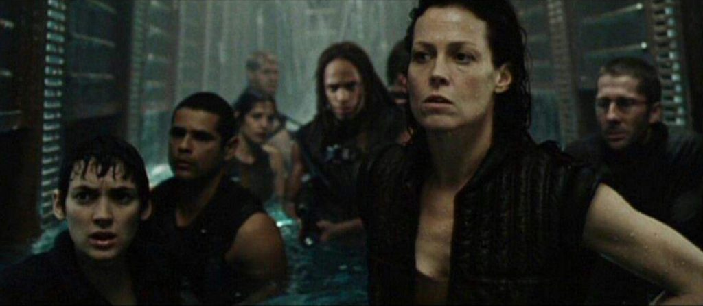
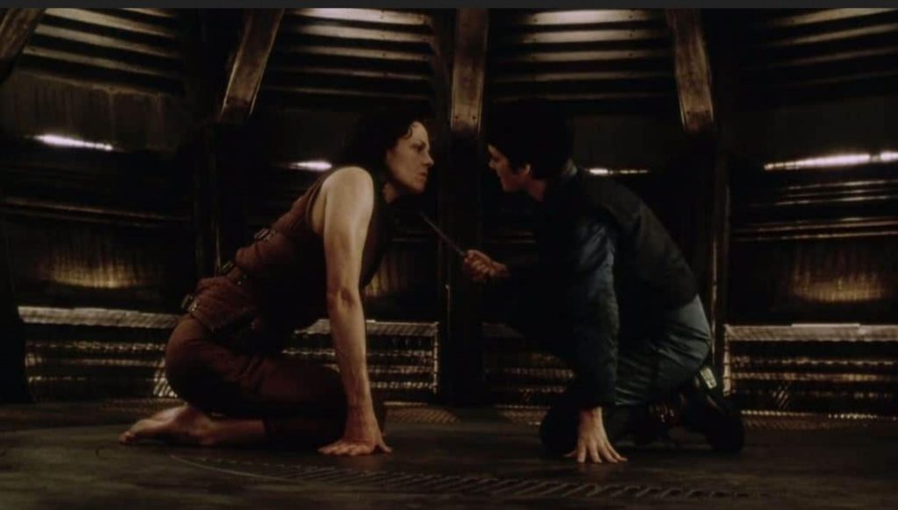

This article discusses what it is like for me to be who I am with the understanding that I have been modified by both the United States government, and by our benefactors (the type-1 greys from The Domain). These modifications have, of course, changed me. The closest image available to recount these modifications is from the movie series “Alien”, and most specifically a character known as “Ripley 8”.
This article came about when The Domain Commander told me that I “was not human”.
I did not want to hear that. And I am actually resentful of it.
The Commander Statement
You are NOT a normal human being. When our agency / MAJestic installed the ELF probes, they / we / us also transformed your personality. We compartmentalized you. You know that. During your MAJestic retirement sequence in ADC Pine Bluff, you confronted various personalities that are part of you. You are aware of the scientist, the Naval officer, and so on and so forth. However, there are other personalities that you are not aware of. Let it be well understood that it is intentionally by design. These other personalities are not anything that you want to know about, or be associated with. Thus they are not part of your shutdown sequence. They are permanently hardwired to your personality. You have [1] Dr. Jeckle and Mr. Hyde, you have [2] The Wolfman (actually, the image is of a half-man, half-sabertooth tiger). You have [3] Mr. Dracula / The Mummy (image is confused and overlaid over each other.), and you have [4] The Incredible Hulk. None of these alter personalities are muted. They are all active. They are always intended to be active. That makes you dangerous, and why you needed to be sent to prison. That is one of the reasons why they (MAJestic) cannot allow people like yourselves to be walking the (American) streets freely. You are a loaded gun with no "safety switch". When you start to have memory triggers, event triggers, or code triggers, one of the personalities will manifest. Your "normal" personality will fade into the background and the new personality will dominate. Most of the manifested personalities (you have experienced) this year has been of "The Incredible Hulk", and you have done a very fine job of suppressing that character personality. We are personally proud of you. No one is harmed. At worst, your wife looks at your strange. That's it. It has been triggered by memories while you are under a lot of stress. This is normal for humans, however in your case there is a personalty change has been intentionally engineered and triggered. There's other triggers as well. Over the last six years the Dr. Jeckle and Mr. Hyde personality were occasionally triggered. You don't remember those events because afterwards your memories are suppressed. But if you look back, you will see these periods of *blank*. That is when this personality was triggered. This is due to the fact that you live next to the Zhuhai heliport. And some of the aircraft use an electrical signal emitter that triggers your personality change. Luckily, for you, the "go code" signal is never emitted. So all that happens is that you go into a "stand by for orders" mode. Then when nothing happens, you "wake up" and forget about the entire incident. For you to turn off these programs you will have to go through the entire Pine Bluff deactivation procedure all over again. We advise you not to do that. We further advise you NEVER (emphasis) return to the United States. All scenarios where you return is problematic for you personally. Do not listen to DZ (my brother). He's a "strange cat" with other purposes and intentions for your return. The reasons are obvious. However, you need to remember that many of your latent personalities can be triggered by radio frequencies at various frequencies, amplitudes, patterns and pulses. The United States has substantially changed since you were there last. The spectrum of presently emitted radiation would trigger some very lethal responses from you.
Fucking lovely. Sheech!
Oh for Pete’s sake!
First I’m some kind of troll like bureaucrat named Mades Escapleon, and now I find out that I am a cross mix of of the bad characters from all the B-grade horror movies of the 1960’s. And to top it off, I’m a gun without a safety switch.
Sheech! Can’t I ever get a break?
This is obviously false. As I look, act and think like a human, and live in a human society. Not to mention that I enjoy pizza, wine and pretty girls. Not to mention, sex, playing with cats, and watching movies. So perhaps, I misinterpreted the comm.
Q: Please expand on the reasoning behind the statement that “I am not human”.
You are not human. You are neither a pure human archetype, nor an inmate "skin suit". You are a hybrid creation with elements of both, as well as constructions intended for utility by the Domain. (Image of a PPT presentation showing a "free and normal" human archetype. Followed by it being "changed" into a different kind of human; an inmate "skin suit". Then, changes to it with ELF, EPB and then a number of operations. The resulting figure on the PPT looks like neither the first Human archetype, nor the inmate "skin suit".) All of the members in your MAJestic sub-project are hybrid creations. Some, like yourself, have further refinements. While others are slightly retarded / backwards / not up to date /contemporaneous with the update software / coding / medical procedures / system enhancements. Additionally, all volunteers to The Domain (through MM here) that have agreed to work with us have also become hybrid creatures. They are no longer "inmate" human (appearing) skin suits. They have had one significant alteration to their inmate "skin suits". Some have had two or more. The severity of the changes is equated to their current dream states, feelings / emotions / perceptions. (I think that it means that the odder your experiences are; your feelings are; your dreams are; the more changes to your "skin suit".) In your case, you were altered for your role in our surrogate agency / utility /division (I think he means MAJestic) and then further altered with the addition of the EBP. So you have at least three layers of alterations. Certainly you might not appreciate the alterations, but we believe that they are necessary for the successful role that you play. Stop assuming that you are the same as everyone else. YOU ARE NOT. (It felt like he was stressing things to me like my old DI in the Navy.)
Then, what the Hell am I?
Ripley 8?
Who or What is “Ripley 8”
We now refer to a fictional character. This character is from the movie “alien resurrection“.
Ripley 8 (also known as Number 8) was the eighth and almost fully successful clone of Lieutenant Ellen Ripley created by the USM.
The USM’s mission was to retrieve a Xenomorph Queen (in its chestburster cycle) from the clone’s chest.
However, subsequently the clone’s human DNA was mixed with Alien DNA there by creating a hybrid that retained much of the memories and personality of the original Ripley as well as other features.
Birth
Ripley 8 was cloned from frozen samples of Ellen Ripley’s blood, recovered after her death, from Fiorina 161. The United Systems Military knew of the Alien Queen inside Ellen Ripley at the time of her death, made several attempts to clone Ripley, and after seven failures, they finally got the process right, effectively creating Ripley 8. They surgically extracted the Queen from Number 8 and began to teach her how to use her powers onboard the Auriga. During therapy sessions, one of the scientists brought back repressed memories of Newt.
Escape
Number 8 was later confronted by Call, who attempts to kill her, believing that she may be used to create more Aliens, but Call is too late; the Aliens have already matured and quickly escape their confinement, damaging the ship and killing most of its crew.
Dr. Wren, one of the ship’s scientists, reveals that the Auriga’s default command in an emergency situation is to return to Earth. Realizing that this will unleash the Aliens on Earth, Ripley, the mercenaries, Wren, a marine named Distephano, and a surviving Alien host, Purvis, attempt to escape on the Betty and destroy the Auriga.
While escaping the Auriga, number 8 came across the laboratory containing her failed predecessors, including number 7. Struggling to speak, number 7 begged number 8 to euthanize her to end her life of agony, and number 8 complied by killing her with a flamethrower then torching the entire lab. As the group makes their way through the damaged ship, several of them are killed by the Aliens.
Call is revealed to be an android after Wren betrays the group. Using her abilities to interface with the damaged ship’s systems, they set it on a collision course with Earth, hoping that the Aliens will be destroyed in the crash. Ripley 8 then feels the pain endured by the Genetic Queen via telepathic connection, she was captured by the Xenomorphs and was brought to the Queen’s chamber.
Encounter with the Newborn
The Queen gave birth to a new lifeform called the Newborn. Shortly after birth, the newborn decapitates the Queen, instead having imprinted Ripley as its true mother.
The newborn follows Ripley onboard the Betty, closing the jammed door and saving the spacecraft from the vacuum of space. After another encounter with Ripley, she uses one of the being’s sharp canine teeth to cut her hand. Splashing her own acidic blood onto the plexiglas viewing port of the Betty’s cargo bay, she succeeded in her attempt to breach the window and caused everything to be sucked out (along with the newborn) which caught against the glass as it tried to return to Ripley. Subsequently, it is sucked out into space piece by piece, unable to properly free itself from the vacuum of space.
New Life
The Auriga was destroyed upon its impact to the Earth’s atmosphere, taking the remaining Xenomorphs onboard along with it, destroying the last trace of the creature in existence. Number 8 later finds herself in Paris, though it is obvious that something catastrophic happened there as the city is in ruins. She then wonders what new world awaits her.

Personality & Traits
Number 8 was an exact copy of Ellen Ripley but that was only partly skin deep, as her personality was much different; she is apathetic, cold and seemingly enjoyed the havoc the Xenomorphs caused.
She was also able to “feel” the Xenomorphs, but despite this she was on the side of the humans. This may not have been out of morality, but the fact that she was still a target of the Xenomorphs; as a facehugger latched on to her in the flooded section of the ship and Xenomorph Warriors tried to kill or capture her, despite the fact she was part xenomorph herself.
Dr Gedimen said that she has something of a predatory behavior as she toys with the Betty crew in the basketball court.
Some of the original Ripley’s personalty and maternal behavior does reside in her though, as when a female scientist shows Ripley a picture of a young girl, Ripley smiles but then quickly becomes saddened as she remembers both Newt and her daughter, Amanda, and realizes what the memories mean. She also becomes protective of Call, almost motherly-so.
Hybrid Characteristics
Due to the crossing of Ellen Ripley and an Alien Queen, number 8 has traces of the Xenomorph genes that she continually exhibits throughout the movie. Below are a list of such characteristics:
- Physical Appearance: Being her clone, number 8 looks identical to Ellen Ripley; however because of her Xenomorph genes, there are some physical differences which includes glossy metallic teeth, naturally dark fingernails, and a slightly altered skin tone.
- Psyche: Number 8 displayed very violent and ferocious behavior. Her general outlook and mindset were notably vicious and obviously reminiscent of the Xenomorph behavior. Even her body language speaks of the Alien DNA she possesses, as her movements are feral and almost cat-like.
- Superior Strength: Numerous times number 8 demonstrates a superior strength that is not natural to humans. Such example is just after a few drones escape their cages and begin to take over the USM Auriga: number 8 is locked in a small, barren quarters and an Xenomorph is trying to break in to kill her. Quickly acting, number 8 uses her bare hands and fists to punch through a sealed metal panel so that she can trip wires to a back door. Another example was during the swim through the flooded area of the USM Auriga, when a Facehugger attached itself to her after the group had surfaced, and after a struggle she managed to pull it off.

-
- Rapid Cell Regeneration: Another ability given to number 8 due to the gene crossing is her ability to rapidly heal from injuries. From her confines, she is visited by Annalee Call, who brandishes a knife in an attempt to kill her. But number 8 runs the blade through her right palm without pain, then after removing the blade, the wound heals within moments.
- Jumping Skills: She is shown to be able to leap large distances.
- Endurance: Number 8 is able to have a higher endurance rate than any human. An example is during the unexpected swim through the USM Aurigas decks that number 8 shows the uncanny ability to stay underwater longer. Additionally, she is never shown as having shortness of breath or any weariness during the frantic escape from the ship like her human counterparts.
- Caustic Blood: Much like the Xenomorphs, Ripley 8 has acidic blood that can burn through metal, skin, clothing, aluminum silcate glass, and fused silica glass. However, number 8’s blood does remain crimson red like that of humans and is much more mild than the pure Xenomorph’s yellow-tinted blood.
- Alien Empathy: Due to her half-Xenomorph genetics, number 8 is able to sense the presence of other Xenomorphs as well as their motives and emotions and possesses an apparent mental connection with the Xenomorph hive.
- Genetic Memory: The Xenomorphs possesses the ability to pass on their memories genetically, and because of this Ripley 8 has “inherited” vague memories that belonged to the original Ellen Ripley as well as the Xenomorph. An example of this is when a scientist onboard the Auriga inadvertently triggers Ripley’s memories of Newt and her daughter. These confiding memories results in Number 8 suffering a crisis of loyalty until the original Ripley’s hatred for the Xenomorphs break through and she sides with the humans.
Now for the real stuff; MM
Ripley 8 is a fiction. But I am real.
My experience in MAJestic, and how I became who I am today is all documented on the many pages of MM. But this article is to say that Hollywood is a fiction. And I am real. And I just want to take a moment or two to discuss what it is like being me.
I have numerous unmodified traits that make me different from most “average” people.
- My core education is in Aerospace Engineering / Astrophysics.
- I was accepted for and trained as a Naval Aviator.
Those two things set me apart in education and training. How many Aerospace Engineers are alive in America these days? And how many of them are Naval Aviators? Not many. Most of the other aviators I trained with took basic humanities. Very few were STEM educated.
I also have other things that set me apart from most SAP’s in the US government.
- I joined MAJestic. Which is a volunteer organization that operates within the ONI.
- Which then physically modified me with seven ELF probes in my skull.
- And which used MK-Ultra behavior modification to compartmentalize my personalities.
Which really narrows down my augmented skill set. How many do you figure are in the United States today that meet all of these above criteria?
And that is just for starters. Once that was completed, I was sent off-world and further modified by The Domain; our “benefactors”. Which again makes me somewhat “special”. As most of MAJestic do not have EBP installed.
- EBP installed.
- Physical body modified.
- Non-physical bodies modified.
And then over time, with my various tasks and assignments, I have experienced a reality far different from which a “normal” human would experience.
- World-line changes
- World-line slides
- Ability to communicate via the ELF probes.
- Ability to communicate using the EBP.
And my experiences…
- Married to a person who had a serious mental illness.
- In a cutthroat high-tech industry that hired and fired at will.
- International travel as part of my work.
- Retirement as a Sex Offender.
- Finally, egress and departure to live inside of China.
All told my experiences are wholly unique. All of this, by definition, makes me different.
But NOT alien.
Keeping all this real.
We are ALL, every single one of us, dealing with our own unique lives, and our own unique experiences.
None of us are better or worse than each other.
We are all different, and that is a good thing.
This article is to tell you all that I enjoy wine, pretty girls, pizza, steaks, “goldfish crackers” and “cheese-it” crackers, sex, and a nice ice cream Sunday on a hot, hot day. I like cats, dogs, and playing with things. I like to tromp in the woods, and smell the lush moistness underfoot, and rid a motorcycle though winding roads.
The human part of me is still there.
And I am getting old. I have blood pressure problems, heart problems, I drink too much, smoke too much, and am starting to have a daddy-belly (if you know what I mean).
I get happy, elated, and angry and sad. I like to read, and eat, and cook, and nap.
I think that most people here can relate to all that.
That’s because I am human.
But being different is not evident. Many people make the mistake that I am 100% of what they expect. You can see this on the occasional comments that I allow to post. Like the Jackass who asked (respectfully) why I don’t allow discussions about Jews! Jews! Jews! on my website. I mean really! Is this guy so clueless not to realize how anti-social that is? Sheech!
You know guys, anything can happen. And one day I will move on. My family will be sad and distressed. The MM site will fade into obscurity without a mention, and I will be one of those “flash in the pan” characters of limited interest to the society as a whole. Like Soopy Sales, Howdy Doody, or Jerry Lewis.
The point
Does it really matter if I am different on the inside? Does it matter if you are? Or if she is? Or if those people over there are?
No it doesn’t.
What does matter however, is our acceptance of things that we cannot change, may not like, or want to improve. And in order to accept those things, we need to be accepting that EVERY PERSON is just as different from each other, as I am from the “typical person”. We are all — everyone of us — different.
Being different is a good thing.
When I was in Pago Pago, a fellow came over to do some plumbing work on one of the hospital installations that I was working on, and we got to talking. He kept on saying that he really wasn’t a plumber, in a sad desultorily manner. And I had to correct him. He said he was a trained EMT, but that the funding for the job ended, so he was just doing what ever work he could find.
I told him that you are NEVER defined by your job. Which is a major lesson us men must deal with.
And…
You are also never what your career or your education is either. That is meaningless.
And…
Your value is never defined on how much money you make, though it will influence the happiness of your spouse.
And…
You are not what others say your are, whether lies or truth.
And…
You are not your past, your past mistakes, or your past successes.
Because, you are exactly who you are right now. PERIOD. Good, bad, ugly, dirty, clean, pristine, perfect, or tarnished. You are what you are in this very slim moment in time.
You must make this moment special, and let the rest of the world howl in frustration.
You know…
I haven’t flown a plane in years. I am tardy in my physical exercises. I could be a lot nicer. I should be making more money. I do need to take care of a lot of home projects that are falling behind, and so on and so forth…
I suppose that many of you are like me.
That’s because we ARE human. No matter what anyone else says. No matter how strong, important or powerful they are, you are exactly who you are, as unique as you are. And that is wonderful because you are SPECIAL.
Is this guy better than me because he has money…? (VIDEO)
And to tell youse guys the truth, I am sure that this guy is enjoying life and having a great time, but I really don’t know if I would feel comfortable living like him. Not really.
It is how we handle our life that matters. It is the ways that we interact with others, do our best, and be helpful. These are what matters. And if you are the Rufus, your life changes. It changes. (VIDEO)
And you know, you don’t need to perform heroic actions. You just need to be good.
Be good. Do good things.
You need to put smiles on the faces of those around you. Let them know that they are special and appreciated. Give the neighborhood cats a little treat. Tell the girl in the office that she looks good in the dress. Tell the bank teller that you like her glasses. Buy a cup of coffee for a coworker. Hold the door open to others, and smile and say Hi!
Use your talents, whatever they are. Give others “a break”. Cut them some slack. Put smiles on the faces of those around you.
Use your talents. Like this artist. He just gives people his art for free. No strings attached. (VIDEO)
Do things with no strings attached.